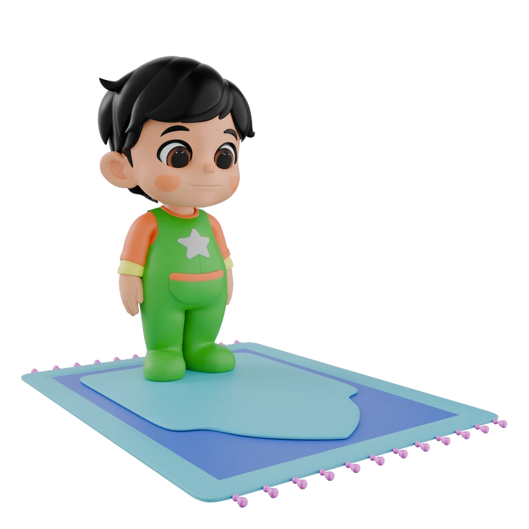

✦
🌙
⭐
Yuk sholat
As-Salamu 'Alaikum
Yuk sholat
bareng Mo!

Dzuhur
12:00
--:--:--
Langkah Sholat
Ketuk langkah untuk belajar bareng Mo
0/7
Lainnya
Takbiratul Ihram
تَكْبِيرَةُ الإِحْرَام
Tips dari Mo
Yuk latihan sholat hari ini!
Mo nungguin kamu 😊
Capaian Belajarmu
Yang sudah kamu pelajari bareng Mo
Langkah Sholat
0 /7
Buka Panduan Sholat untuk mulai belajar
Jenis Dzikir
0 /6
Tap untuk coba dzikir baru
0
Sholat Lengkap
0
Bacaan
0
Bintang
Lencana Mo
Capai pencapaian, buka lencana baru!
0/6
Kerennn! Terus belajar ya 🌟
Mo bangga banget sama kamu — sedikit demi sedikit, makin pintar sholatnya!

0
/ 33
Tap untuk menghitung